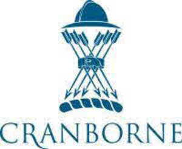

Trade Mark Journal No.2025/024 13 June 2025
UK00004206875 21 May 2025 (1,29,31,35,36,37,40,41,42,43,44)

- Class 1
- Filtering materials of mineral substances.
- Class 29
- Meat, fish, poultry and game; dairy products; Meat and meat products; Milk products; Cooking and edible oils; Oils for food; Edible oils for use in cooking foodstuffs; Vegetable oils for food; Chia seeds for food; Edible seeds; Processed pumpkin seeds; Processed sunflower seeds; Birds eggs and egg products; Duck meat; Chicken meat; Venison and beef meat; Poultry and game meat.
- Class 31
- Vegetable seeds; Unprocessed cereal seeds; Hybrid wheat seeds; Wheat seeds; Flax [linseed] plant seeds; Grains [seeds]; Fruit seeds; Unprocessed hemp seeds; Flower, plant and poppy seeds; Raw seeds; Unprocessed oil seeds; Unprocessed edible seeds; Agricultural and aquacultural crops, horticulture and forestry products.
- Class 35
- Wholesale services in relation to foodstuffs; Wholesale services in relation to food preparation; Retail services in relation to bakery, meat, fish and dairy products; Wholesale services in relation to horticulture products; Retail services relating to food.
- Class 36
- Property management services; Real estate and property management services; Real estate services related to management of property investments; Real estate management services relating to residential buildings; Real estate management services relating to housing estates; Rental of property; Management of property; Real estate management services relating to commercial buildings; Estate management services relating to agriculture; Estate management services relating to horticulture; Leasing of property; Arranging of leases for the rental of commercial property; Leasing of land; Leasing and rental of commercial premises.
- Class 37
- Maintenance of property; Renovation of property; Property development services [construction]; Building of commercial properties; Construction of residential properties; Building of shops; Construction of rural works; Preservation of buildings; Maintenance and repair of residential buildings; Extraction of natural resources.
- Class 40
- Production of renewable green energy; Food and beverage treatment.
- Class 41
- Recording, film, video and television studio services; Educational services relating to the conservation of nature.
- Class 42
- Research relating to environmental protection; Research relating to cultivation in agriculture; Inspection of agriculture; Architectural services relating to the development of land; Planning and design of residential communities; Mining and mineral exploration services.
- Class 43
- Accommodation services; Providing facilities for fairs and exhibitions; Arranging of wedding receptions [venues]; Bar and restaurant services; Providing food and drink for guests in restaurants; Catering of food and drink.
- Class 44
- Agricultural services relating to environmental conservation; Reintroduction and conservation of wildlife; Agriculture, horticulture and forestry services; Farming services; Wildlife management; Forest habitat restoration; Farming (crops); Pest control services for agriculture, aquaculture, horticulture and forestry.
Gascoyne Estates Limited
Representative: Farrer & Co LLP